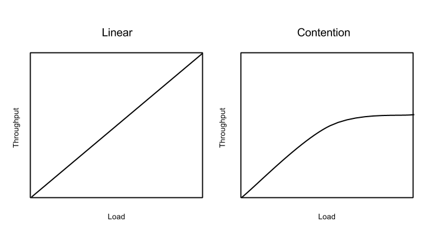
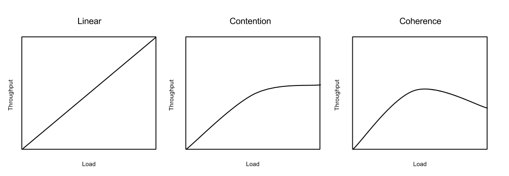

Scalability is the ability or characteristic of a system to take on more work/requests without degrading in a measured constraint like throughput and latency. How much work a system can do effectively i.e meeting valid throughput, latency objectives is at the very least constrained by the capacity of the system. When we discuss scalability however we are interested in delving into the things that hamper scalability in the face of both limited and expandable capacity.
In the computing world this expandable capacity usually comes in the form of discrete quanta of resources for example, adding cores to processor, adding more processor sockets to a mother board, adding more hard disks (RAID 0/10), adding more machines to a cluster. Each atomic resource by itself has an inherent capacity to do work which adds to the global capacity of work that can be done.
Let's further define load on a computing system as the amount of work that is submitted to the system. Let's simplify scalability for our discussion and formally define it as throughput/load on the system.
As we have discussed above, global capacity of a computing system is an aggregate of individual capacities of coarser grained resources. In an ideal world
C = c1 + c2 + .... cn
where C is global capacity and c1...cn are capacities of individual resources. This would also mean, that in an ideal world
T = t1 + t2 + .... tn
where T is global throughput and t1...tn if both of the above were true in a system, we would have what is generally referred to as a linearly scalable system. Except there is no such thing as a linearly scalable system in the real world, systems that appear linearly scalable are merely systems that haven't been put under enough load yet. Bottlenecks emerge in all(almost) systems as load increases, these bottlenecks emerge when there is contention for the same set of global resources. Computing systems usually deal with resource contention, by queuing or dropping work. But the inevitable fact is when there is resource contention, one's system is no longer linearly scalable. 
Under heavy contention throughput flat-lines.
Remedying this flatlining is an addressable problem. Find and remove bottlenecks if possible. If not, add more capacity to alleviate the bottleneck. The effects of contention problems are all around us. Too many threads contending for a resource, processes waiting in the runqeue of the scheduler, too many write or read requests waiting to be scheduled by the IO scheduler.
Coherence, in the context of computing systems means multiple, individual, interested resources, within the system observe/agree on an event/state. The requirement for Coherence in a computing system, by itself does not affect, throughput or scalability drastically. If however coherence was a precondition for safe execution/running of the system, then every event/state change that requires coherence among participating resources leads to degradation of the system throughput. For example, on a multi core processor, if one of the cores, writes a value to "x" it's register and subsequently L1 cache, which represents a memory location in the OS's virtual memory and triggers a memory barrier, then the caches of all other cores that contain "x" should be invalidated and reloaded with the correct value of "x". This means either all progress is stopped until coherence is reached or any progress made before coherence is reached is discarded. Hence any requirement of coherence among resources to make progress is going to severely affect the system's throughput. Another example of coherence hindering throughput is any system that requires distributed transactions.
Coherence can be achieved through a central coordinator or in a peer-peer fashion where there is no central coordinator. The minimum number of messages that need to exchanged for N resources to reach consensus is N so O(N) is the best case message passing complexity for coherence.
Throughput is inversely proportional to number of events/state transitions that require coherence to make progress

Throughput is inversely proportional to the number of resources/nodes that need to be coherent to make progress
The above image shows clearly that coherence constraints negatively impact throughput of a system. Unlike contention the effects of coherence constraints will only worsen by adding extra capacity because, it means more coordination is required to make progress.